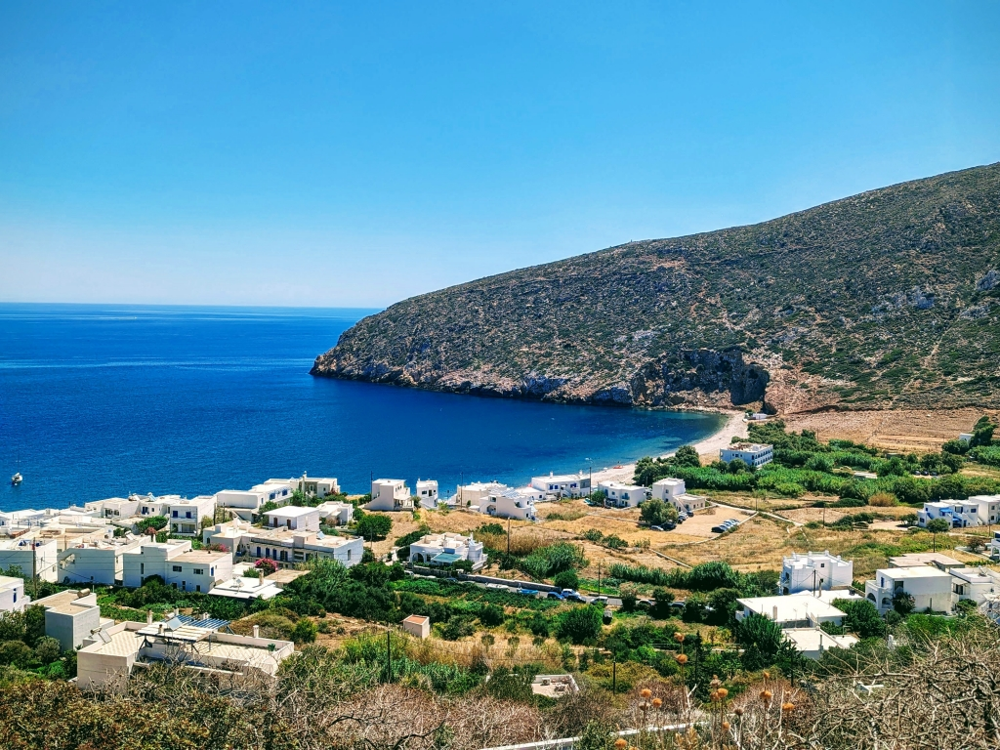

Traveling
Naxos, Greece
- Summer Vacation
- August 2023
Naxos has always held a special place in my heart, as my roots trace back to the picturesque village of Apeiranthos. During the 2023 summer, we chose to visit the island. We stayed at the tranquil area of Stelida as our home base, waking to crisp Aegean breezes and the promise of sun-soaked days. Mornings often began at Agios Prokopios, where turquoise waters invited a leisurely swim. From there, we ventured to Apollonas (see below) for a refreshing dip, and spent afternoons sampling fresh island flavors in tucked-away tavernas. Chora revealed another side of Naxos, with its winding alleys, traditional architecture, and the gently buzzing atmosphere of a seaside town. We couldn't resist a sunset walk to Portara—watching the sky transform into a palette of oranges and pinks was a memory to treasure (shown on the left). Naxos reminded us time and again why it feels so much like home.
